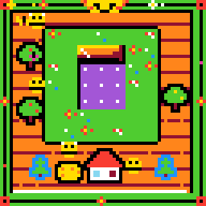
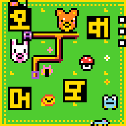

Preview draft, not submitted
Out of My Depth
Mark Barney and Son Pham, Team Turducken. ARC Prize 2026, ARC-AGI-3.
Abstract. Our team sat fifth on the public ARC-AGI-3 board with a small open model whose weights never change. This essay is by the team's co-lead, a game producer. It argues that intelligence is the capacity to acquire capacity, that keeping what you acquire is the other half, and that agency, choosing what to acquire, is a third thing. In our entry the keeping and the choosing live in the people, not the model.
By December 2024, when OpenAI announced o3, machines were passing the exams that diplomas certify: the bar, the medical licensing boards. They held no diploma and needed none. I am the opposite case. I left university without a degree, my mathematics stops at calculus, and people have told me all my life that I am smart without my ever being able to check. Credential and capability had come apart from both ends, and it shook me. What had the exams been measuring?
Paulo Freire called the schooling I walked out of banking: the teacher deposits, the students receive, memorize and repeat [2, p. 72]. The exam audits the account. His example is arithmetic: a student memorizes that four times four is sixteen without ever perceiving what four times four means [2, p. 71]. That was my multiplication tables. In the late 1980s I was asked to grind through them by hand when calculators existed, and I spent the time teaching myself computers. Once a machine does the computation, grinding it by hand teaches compliance, not what four times four means. It cost me. I never got good at mathematics, and I am not certain the trade was right. What a calculator never told me was which problems were worth solving.
A language model is the banking student carried to its limit, and it passed the finals. That told me less about the machine than about the finals.
The test anyone can referee
I went looking for where it breaks. That led me to François Chollet. Intelligence is "the rate at which a learner turns its experience and priors into new skills at valuable tasks that involve uncertainty and adaptation" [1].
His benchmark had a second property that mattered to me. I could referee it. Almost nobody can judge a model's repair of a large codebase. An ARC task a child can check. "Easy for humans, hard for AI" matters now that so much that is hard for humans is easy for machines. It is the one kind of test where everyone can still see for themselves.
So I joined a machine learning contest, far out of my depth. That is a producer's ordinary condition: I am answerable for work done by people who know more than I do. When I don't know something I go and find out. Son Pham led the team with me and did the agent and performance engineering.
A frozen mind, one game at a time
ARC-AGI-3 is a set of turn-based games with no instructions. The player finds the goal and rules by playing, and is scored against people's move counts.
Our entry [3] runs Qwen3.8-Flash-Next, a small open model in Intel's 4-bit build, through 110 hidden games inside Daniel Franzen's public harness. The model's weights are frozen: nothing it meets in a game changes them. Apart from speed-only draft heads, our fine-tunes and reinforcement learning never beat the base model [4].
Inside a game it keeps code. The harness shows it each screen as objects and changes, and nothing about any game. The model guesses a rule, writes Python to test it, and the game answers. The functions it writes are kept until the game ends, a median of 88 a game on our test board. We added notes, a scheduler and two checking tools. In the nearest run we can read, the model never called our checks and wrote its own.
This notebook scored 53.70, and 50.34 when resubmitted unchanged. Our best, a sibling, scored 56.02: fifth of 4,923 on the public board, by our own mirror of it. The full record, with prior work and what lost, is in our write-up [4].
Why might it work? Almost nothing is deposited, and we have no ablation. Once we did deposit an answer, and it was wrong: our prompt still tells the model not to be distracted by the bar at the edge of the screen. In 21 of the 25 public games it is the move budget.
But when a game ends, the harness throws the library away. Of 3,108 functions the model named on our test board, 2,622 appeared in one game only. It begins every game having kept nothing from the last.
Posing the problem
When ARC Prize released its game engine, we ran the benchmark in reverse. Could a machine make a game that a person finds easy?
Each official environment was given to ten people, and admitted only if at least two solved it independently, at first sight [5]. Our brief kept ARC's words: easy for people, hard for AI, and fun.
I began by repainting games that already existed. Son was making original ones, unlike anything in the public set. Then agents tried. What an agent hands back runs, has levels, and can be won. It is seldom a game. A rule turns on timing no one can see. Budd and Scarfe define slop: "Slop is what happens when an artefact is generated without path-dependence, without understanding, without respecting the phylogeny or the constraints" [6].
A game is a problem posed to someone who does not know the answer yet. Freire's alternative to the deposit was posing problems [2, p. 79]. To pose one well you must play it as that person, get lost where they would, and notice when being lost stops being interesting. Our agents wrote passable first drafts and could not finish them.
Together with the agents we made 1,046 games and kept 46. Eight hundred were batch output from GPT models, and not one of those was kept [7]. Every game we kept had a person's judgment on it, usually mine.





Six of the games we kept. Real engine frames; all playable at https://82deutschmark.github.io/arc3-synthetic-games/
Acquire, keep, choose
I use Budd and Scarfe's phrase, "the capacity to acquire capacity" [6], for what Chollet's rate measures. It wants a second verb. The banking student keeps without acquiring. Our model is the mirror: it acquires inside a game, from its own code and a game able to say no, and keeps none of it past the last screen. Its weights are finished; only the game in front of it is not. When a larger model ships this one will be retired and replaced, not taught. Freire says people know themselves to be unfinished, and that this awareness lies at education's roots [2, p. 84]. The team around it did both, and the entry's capacity lives in us and in the harness we kept improving.
Agency is a third thing. Intelligence acquires capacity. Agency chooses which capacity is worth acquiring, and for whose purposes. Freire's banked student is an object: the teacher chooses the content, and the students, who were not consulted, adapt to it [2, p. 73]. The alternative is to become a being for oneself, acting on the world to change it [2, pp. 74, 79]. Our model chooses hypotheses and never the game. I chose mine. A tool supplies capacity to anyone and cannot supply the purpose. Budd and Scarfe write that AI amplifies what you bring to it [6].
I am 44, and there is no next version of me: the same mind has to learn and keep. Our model cannot; its library is discarded when each game ends. That is the gap worth closing. We offer the games, open and each with a person's judgment on it [7]. We bet they are better practice than games only a solver has checked. Nobody has measured that.
One person's taste judged the games, where ARC used ten. Our best score was never rerun, and we have not seen the private board.
I cannot say how smart I am. A year ago I could do none of this. I kept what I learned, and I chose what to learn.
Thanks. Ronen, Daniel Franzen, Tufa Labs, Intel AutoRound.
References
[1] François Chollet. On the Measure of Intelligence. 2019. https://arxiv.org/abs/1911.01547
[2] Paulo Freire. Pedagogy of the Oppressed, chapter 2. Translated by Myra Bergman Ramos. 30th anniversary edition. Bloomsbury, 2014 (Continuum, 2000).
[3] Team Turducken. Kaggle notebook, version 363005415. https://www.kaggle.com/code/sonphamorg/arc3-daniel-cnp3k5mx-ff-nosplice-o34g?scriptVersionId=363005415
[4] Team Turducken. Stuffing the Turducken. November 2026.
[5] ARC Prize. ARC-AGI-3 Technical Report, sections 3.6 and 5. 2026. https://arcprize.org/media/ARC_AGI_3_Technical_Report.pdf
[6] Jeremy Budd and Tim Scarfe. Why Creativity Cannot Be Interpolated. 2026. https://archive.mlst.ai/paper/why-creativity-cannot-be-interpolated/
[7] Mark Barney. ARC-3 Synthetic Games. 8 November 2026. https://82deutschmark.github.io/arc3-synthetic-games/